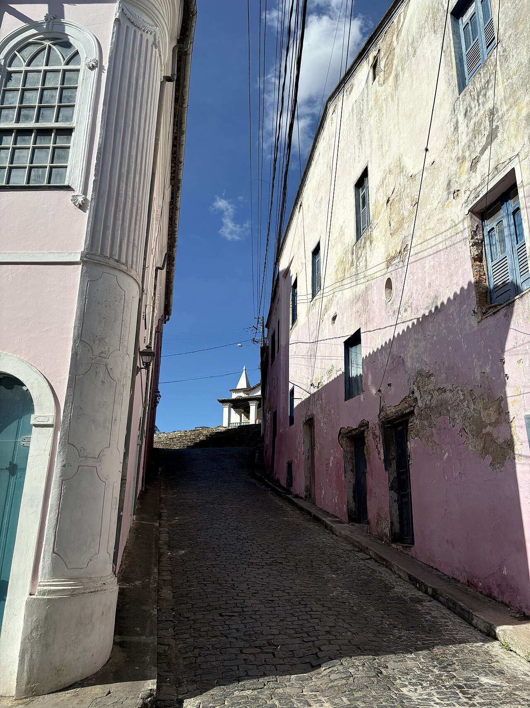

Imagem histórica
Capoeira na Bahia, 1835
Registros visuais permitem investigar relações sociais e representações de diferentes períodos.
Johann Moritz Rugendas — domínio público, Wikimedia Commons.Documento é mais do que papel: vozes, sons, imagens, objetos e práticas também registram experiências.
Registros visuais permitem investigar relações sociais e representações de diferentes períodos.
Johann Moritz Rugendas — domínio público, Wikimedia Commons.Gestos, músicas, instrumentos e ensinamentos formam um patrimônio transmitido entre gerações.
Foto: Theobondolfi, Wikimedia Commons.
A tradição de mulheres negras em Cachoeira reúne religiosidade, pertencimento e continuidade histórica.
Foto: 7deAbril, Wikimedia Commons.